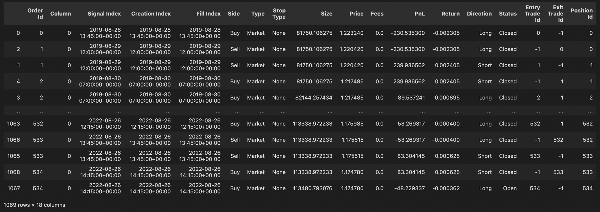
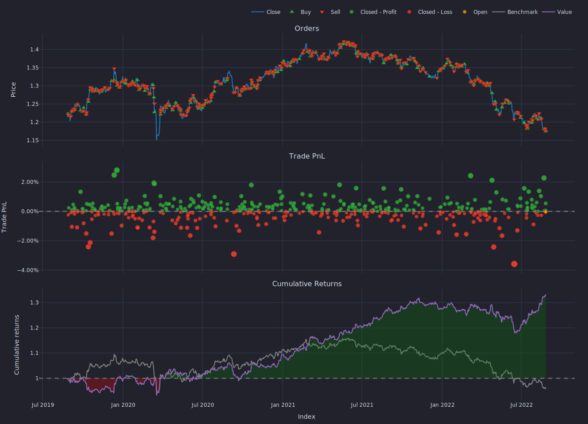
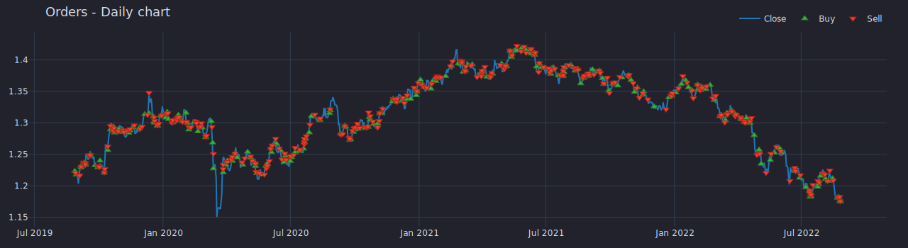
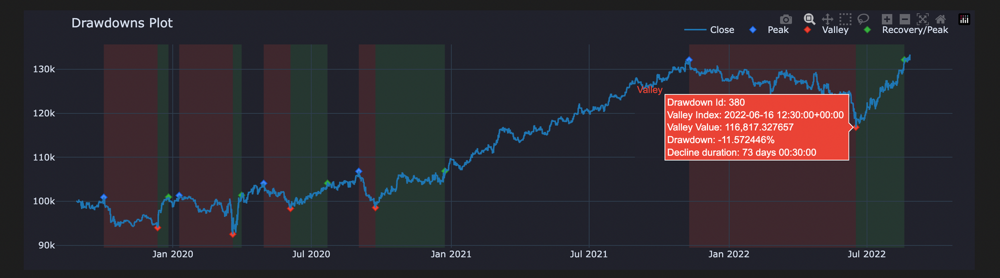
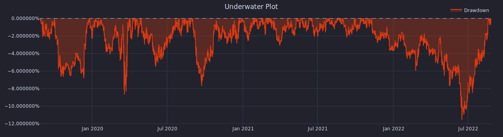

VectorBT Pro - Strategy Development and Signal Generation

Strategy Development and Signal Generation
Strategy Development usually involves multiple trial and error research, where we check for various combinations of technical indicators and price levels to generate entry and exit signals. It is very easy to generate entry and exit signals in VectorBT which is just a bool array for entries and exits. If you have different criteria for your LONGS and SHORTS, you can create separate boolean arrays for long_entries, long_exits, short_entries and short_exits.
Double Bollinger Band Strategy Conditions
For the rest of this tutorial we will be using the indicators and other elements created in the previous tutorial - Aligning MTF time series Data with Resampling, for our customized MTF adaptation of this Double Bollinger Band Strategy on the H4 and 15m timeframes. In our implementation we will be using the same conditions for a short entry as a long exit and a short exit signal will use the same conditions as a long entry.
Long Condition ↗
In our adaptation of this Double Bollinger Band Strategy, a long (buy) signal is generated whenever the H4 market (Low) price goes below its lower Bollinger band, and the 15m RSI goes below its lower Bollinger band.
Here are the two conditions (
c1_long_entryandc2_long_entry) that would qualify a long entry
## The two variables `bb_upper_fract` and `bb_lower_fract` are simply some adjustment parameters for the RSI bollinger bands and they are explained at the end of this article.
bb_upper_fract = 0.99
bb_lower_fract = 1.01
c1_long_entry = (mtf_df['h4_low'] <= mtf_df['h4_bband_price_lower'])
c2_long_entry = (mtf_df['m15_rsi'] <= (bb_lower_fract * mtf_df['m15_bband_rsi_lower']))
Short Condition ↘
Likewise, a long exit ( and also the short (sell) signal ) is generated whenever the H4 market (High) price breaks its upper Bollinger band, and the 15m RSI breaks above its upper Bollinger band.
Here are the two conditions (
c1_long_exitandc2_long_exit) that would qualify as a long exit (and also as a short entry )
c1_long_exit = (mtf_df['h4_high'] >= mtf_df['h4_bband_price_upper'])
c2_long_exit = (mtf_df['m15_rsi'] >= (bb_upper_fract * mtf_df['m15_bband_rsi_upper']))
As seen below the entry and exit criteria can be added as two seperate columns in the mtf_df pandas dataframe, simply by chaining multiple conditions using the bitwise & operator.
## Strategy conditions check - Using m15 and h4 data
mtf_df['entry'] = c1_long_entry & c2_long_entry
mtf_df['exit'] = c1_long_exit & c2_long_exit
The entries and exits are boolean arrays and in order to represent them in a numerical format we will create a new column called signal in mtf_df that will read 1 where the entry conditions have been satisfied and -1 where the exit conditions have been satisfied, or 0 otherwise.
mtf_df['signal'] = 0
mtf_df['signal'] = np.where( mtf_df['entry'] ,1, 0)
mtf_df['signal'] = np.where( mtf_df['exit'] ,-1, mtf_df['signal'])
The entries and exits series can be extracted from mtf_df['signal'] which will then be used to run the simulation/backtest
entries = mtf_df.signal == 1.0
exits = mtf_df.signal == -1.0
To run the backtest we use the following code , when the direction is set to both, the long exit is categorised as a short entry, as to close out the long position a short must be initiated and likewise, the short exit is treated as a long entry
pf = vbt.Portfolio.from_signals(
close = mtf_df['m15_close'],
entries = entries,
exits = exits,
direction = "both", ## This setting trades both long and short signals
freq = pd.Timedelta(minutes=15),
init_cash = 100000
)
pf_stats = pf.stats()
print("Total Returns [%]:", round(pf_stats['Total Return [%]'], 2))
print("Maximum Drawdown [%]: ", round(pf_stats['Max Drawdown [%]'],2))
print(pf_stats)
Output
Total Returns [%]: 33.27
Maximum Drawdown [%]: 11.57
Start 2019-08-27 00:00:00+00:00
End 2022-08-26 16:45:00+00:00
Period 365 days 05:40:00
Start Value 100000.0
Min Value 92520.879497
Max Value 133314.96609
End Value 133266.736753
Total Return [%] 33.266737
Benchmark Return [%] -3.833225
Total Time Exposure [%] 99.856448
Max Gross Exposure [%] 107.104183
Max Drawdown [%] 11.572446
Max Drawdown Duration 94 days 06:30:00
Total Orders 535
Total Fees Paid 0.0
Total Trades 535
Win Rate [%] 59.550562
Best Trade [%] 2.797026
Worst Trade [%] -3.578342
Avg Winning Trade [%] 0.384536
Avg Losing Trade [%] -0.42807
Avg Winning Trade Duration 0 days 13:10:31.132075471
Avg Losing Trade Duration 0 days 21:07:20.277777777
Profit Factor 1.320807
Expectancy 62.387577
Sharpe Ratio 1.868003
Calmar Ratio 0.867506
Omega Ratio 1.021671
Sortino Ratio 2.691066
dtype: object
pf.stats printout, one might wonder why Period is 365 days, when the dataset start and end period is for 3 years and there are atleast (262 * 3) 786 tradings days in the 3 year calendar? Period in stats measures the number of bars multiplied by frequency, that is, the real duration of backtest and is not to be confused with calendar durationWe can see all the trades that were executed during this backtest simulation by using
pf.trade_history()

Plotting - Portfolio Simulations
It is a good practise to set the theme and plot dimensions that we would like to commonly use for all our plotting in the beginning. VectorBT uses plotly (a python package) for all its plotting capabilities.
## Global Plot Settings for vectorBT
vbt.settings.set_theme("dark")
vbt.settings['plotting']['layout']['width'] = 1280
Since our backtest simulation was run on 15m timeframe (as it was our baseline frequency) we resamply the pf.plot() to save time and also avoid seeing a dense plot. The below SVG static plot was generated using the show_svg() function, but you can also show_png() to render the plot as a static rasterized image or use show() to show an interactive toolbar along with a dynamic interactive plot with hovertools etc.
The important thing to remember is to use one of the
show()method after theplot()in order to render the figure correctly.
# pf.plot().show() ## This takes slightly long (10 secs) as it uses 15m timeframe index
pf.resample("1d").plot().show_svg()

The plot includes three sub-plots that captures at a glance most of the trading performance stats we would like to see like
- Open and closed positions at various price points
- The
PnLof each order - The cummulative returns of our strategy compared to the benchmark returns of just holding the instrument
We can also isolate pf.orders from the above pf.plot to just show the orders and pass a custom kwargs argument to give a custom title for the plot.
kwargs = {"title_text" : "Orders - Daily chart", "title_font_size" : 18}
pf.orders.resample("1d").plot(xaxis=dict(rangeslider_visible=False),**kwargs).show()

Max Drawdown
Understanding and Visualization of Drawdown is a very important part of any strategy development and fortunately, for us VectorBT has a very convenient method to visualize DrawDown
print(f"Max Drawdown [%]: {pf.stats()['Max Drawdown [%]']}")
print(f"Max Drawdown Duration: {pf.stats()['Max Drawdown Duration']}")
pf.drawdowns.plot(**{"title_text" : "Drawdowns Plot"}).show()
Output:
Max Drawdown [%]: 11.572445827440356
Max Drawdown Duration: 94 days 06:30:00

- The above Drawdown plot below shows only the top 5 drawdowns.
- The max drawdown duration of 94 days includes, 73 days for the declination phase and 21 days for the recovery phase in the max. peak drawdown. If you use the
.show()method to get an interactive plot you can see this in the hover information when you hover over the plotted figure.
UnderWater Plot:
VectorBT also allows us to plot an underwater plot, which is basically just an alternative way of visualizing drawdown and shows the relative drawdown ( time-to-time ) from the previous peak balance
kwargs = {"title_text" : "Underwater Plot",'title_x': 0.5}
pf.plot_underwater(**kwargs).show()

To adjust various aspects and parameters of the plot (eg: Title, position etc.) , one should always refer the Plotly Documentation Reference : https://plotly.com/python/reference/layout/
Summary - Strategy Exploration
💡 Why we use bb_upper_fract and bb_lower_fract?
To readily understand what these two adjustment variables are you can try running the code see what happens when you see both of these variables equal to 1 , you will essentially get fewer number of signals.
The bb_upper_fract and bb_lower_fract can simply be thought of as parameters that reduce the gap between the upper bound and the high price and the lower bound and the low price.
Reducing this gap results in price more frequently touching the new upper bound and the new lower bound thus resulting in more signals generated.
💡 What will happen if we try other timeframe combinations?
Well in the strategy explained above we used H4 and m15 but you may have the idea 💭 to use H1 instead of H4, thinking that it would result in more signals and perhaps also more profit 💵 🤑 ?
## Long Entry Conditions
c1_long_entry = (mtf_df['h1_low'] <= mtf_df['h1_bband_price_lower'])
c2_long_entry = (mtf_df['m15_rsi'] <= (bb_lower_fract * mtf_df['m15_bband_rsi_lower']) )
## Long Exit Conditions
c1_long_exit = (mtf_df['h1_high'] >= mtf_df['h1_bband_price_upper'])
c2_long_exit = (mtf_df['m15_rsi'] >= (bb_upper_fract * mtf_df['m15_bband_rsi_upper']))
Yes ✅ that is true we get more signals ,take a look at the results obtained when we execute the above ☝ code. Would you be happy with these results ?
Total Returns [%]: -16.21
Maximum Drawdown [%]: 28.17
Key Takeaways ⚡
-
Ultimately strategy development and signal generation is an art, that is dependent on variety of different elements like:
- Timeframes
- Indicators and their parameter values
- Fundamental and Economic data etc.
-
Its imperative that you study 📚 the rules and parameters of your strategy carefully before backtesting.
Good Luck ✌️ on your strategy development journey, let us know in the comments below if you happen to discover any profitable variations of this strategy